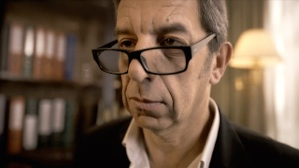
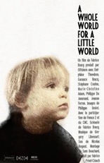

329- Best Script : (Burqa City)
USA, MILWAUKEE : MILWAUKEE FILM FESTIVAL Sept 2021
328- Best Film Comedian Rhapsody : (Burqa City)
327- Prix du public
ITALIE, SAVIGLIANO : CORTOCIRCUITO SAVIGLIANO FILM FESTIVAL Sept 2021
326- Meilleure conception son : (Burqa City)
BRESIL, RIO : CINE CURPAS LAPA Dec 2021
325- Grand Prix : (Burqa City)
324- Prix du public professionnel
FRANCE, CABESTANY : LES RENCONTRES DU COURT «IMAGE IN CABESTANY» Mars 2022
323- Best actor (Omar Mebrouk Burqa City)
ESPAGNE, VILLAMAYOR : FEC VILLAMAYOR FILM FESTIVAL Aout 2021
322- Prix du public : (Burqa City)
FRANCE, VELIZY : FESTIVAL DE COURT METRAGE DE VELIZY Juin 2021
321- Prix du public : (Burqa City)
320- Prix du jury
FRANCE, MEYZIEU : FESTIVAL DU CINEMA EUROPEEN DE MEYZIEU Juin 2021
319- Prix du public : (Burqa City)
ESPAGNE, ALMERIA : ALMERIA FILM FESTIVAL FICAL Nov 2020
318- Best short «Comedian Rhapsody» : (Burqa City)
ITALIE, SAVIGLIANO : CORTOCIRCUITO FILM FESTIVAL Oct 2020
317- Best International Short : (Burqa City)
ITALIE, TELESE : ARTELESIA FILM FESTIVAL Nov 2020
316- Focus Idea Winner : (Burqa City)
POLOGNE, LUBLIN : LUBLIN FILM FESTIVAL Nov 2020
315- Prix du public : (Burqa City)
ITALIE, PADOVA : METRICAMENTE CORTO Nov 2020
314- Prix du public : (Burqa City)
FRANCE, VIVARAIS : FESTIVAL DE CINEMA EN VIVARAIS Oct 2020
313- Best International Short : (Burqa City)
ITALIE, SICILE : CORTO DI SERA Aout 2020
312- Short Narrative Special Jury Commendation Comedic Short : (Burqa City)
USA, PORT TOWNSEND : PORT TOWNSEND FLM FESTIVAL Sept 2020
311- Prix du public : (Burqa City)
FRANCE, ENTRAIGUES SUR LA SORGUE : FESTIVAL DES ANGES Sept 2020
310- Prix du public : (Burqa City)
FRANCE, BOURG EN BRESSE : COURTS DU VENDREDI Sept 2020
309- Best Screenplay : (Burqa City)
USA, RICHMOND : RICHMOND INTERNATIONAL FILM FESTIVAL Sept 2020
308- Best Comedy Short : (Papa dans maman)
ESPAGNE, ALMAGRO : ALMAGRO INTERNATIONAL FILM FESTIVAL Aout 2020
307- Audience Award : (Burqa City)
306- Best Short : (Burqa City)
CANADA, TORONTO : CABBAGETOWN SHORT FILM FESTIVAL Sept 2020
305- Best short : (Burqa City)
304- Audience Award : (Burqa City)
ESPAGNE, TEULADA : CURTS OF MOSCATELL Aout 2020
303- Best Short : (Burqa City)
USA, SAN FRANCISCO : FROZEN FILM FESTIVAL Juillet 2020
302- Best Short : (Burqa City)
ESPAGNE, BARCELONE : FILMSERE Juin 2020
301- Special Jury Mention : (Burqa City)
ESPAGNE, MADRID : SHORT OF THE YEAR Mars 2020
300- Best Narrative : (Burqa City)
USA, SAN LUIS OBISPO : SAN LUIS OBISPO INTERNATIONAL FILM FESTIVAL Mars 2020
299- Prix du public : (Burqa City)
298- Prix du jury : (Burqa City)
FRANCE, MAISONS LAFFITTE : FESTIVAL DE FILMS COURTS DE MAISONS LAFFITTE Mars 2020
297- Audience Award : (Burqa City)
296- Best Actor (Omar Mebrouk) : (Burqa City)
REPUBLIQUE TCHEQUE, PRAGUE : PRAGUE SHORT FILM FESTIVAL Janv 2020
295- Audience Award : (Burqa City)
REPUBLIQUE TCHEQUE, PRAGUE : PRAGUE SHORT FILM FESTIVAL Janv 2020
294- Prix du public : (Burqa City)
FRANCE, VAULX EN VELIN : UN POING C’EST COURT Janv 2020
293- Special Mention : (Burqa City)
INDE, AUROVILLE : AUROVILLE FILM FESTIVAL Janv 2020
292- Best Narrative : (Burqa City)
BRAZIL, SAO PAULO : SAO PAULO FILM FESTIVAL Dec 2019
291- Augusto International Otras Miradas : (Burqa City)
ESPAGNE, SARAGOSSE : ZARAGOZA INTERNATIONAL FILM FESTIVAL Nov 2019
290- Best Short : (Burqa City)
USA, MCALLEN : CINESOL FILM FESTIVAL Nov 2019
289- Prix du public : (Le monde du petit monde)
FRANCE, SAINT MITRE LES REMPARTS : FESTIVAL DU FILM INDEPENDENT SMR13 Nov 2019
288- Best international film : (Burqa City)
BELGIQUE, ANVERS : INTERNATIONAL SOCIAL SHORTS ANTWERP Nov 2019
287- Best Actor (Omar Mebrouk) : (Burqa City)
FRANCE, SAINT MITRE LES REMPARTS : FESTIVAL DU FILM INDEPENDENT SMR13 Nov 2019
286- Best Short : (Burqa City)
UK, DERBY : DERBY FILM FESTIVAL Mai 2019
285- Best Screenplay : (Burqa City)
ITALIE, NAPLES : CORTISONANTI Nov 2019
284- Grand Prix : (Burqa City)
MEXIQUE, MEXICO : FESTIVAL MUNDIAL DE CINE DE VERA CRUZ Nov 2019
283- Audience Award Honorable mention : (Burqa City)
USA, ST CLOUD, ST CLOUD FILM FESTIVAL Nov 2019
282- Grand Prix : (Burqa City)
BELGIQUE, LIEGE : FESTIVAL INTERNATIONAL DU FILM DE COMEDIE DE LIEGE Nov 2019
281- Prix du public : (Burqa City)
FRANCE, BOURG EN BRESSE : COURTS DU VENDREDI Dec 2019
280- Prix du public : (Burqa City)
FRANCE, VENCE : RENCONTRES CINEMATOGRAPHIQUES DE VENCE Nov 2019
279- Prix du public : (Burqa City)
FRANCE, LURE : FESTIVAL CINEM’ACTION Nov 2019
278- Golden Pelican : (Burqa City)
GRECE, MYKONOS : MYKONOS BIENNALE Sept 2019
277- Best Film : (Burqa City)
BRAZIL, SAO PAULO : HUMAN RIGHT FILM FESTIVAL Nov 2019
276- Prix du public : (Burqa City)
FRANCE, HENDAYE : HENDAIA FILM FESTIVAL Oct 2019
275- Best Comedy : (Burqa City)
274- Best Actor (Omar Mebrouk) : (Burqa City)
USA, LANCASTER : LANCASTER INTERNATIONAL FILM FESTIVAL Oct 2019
273- Best International Short : (Burqa City)
PORTO RICO, PORTO RICO : FESTIVAL INTERNACIONAL DE CINE FINE ARTS Oct 2019
272- Best Comedy : (Burqa City)
USA, NEW YORK : REVOLUTION ME FILM FESTIVAL Sept 2019
271- Best Film : (Burqa City)
ITALIE, ARGENTA : ZEROTRENTA Oct 2019
270- Best Narrative Short 1st runner up : (Burqa City)
USA, ALBUQUERQUE : ALBUQUERQUE FILM FESTIVAL & COMIC CON Sept 2019
269- Audience Award : (Burqa City)
BIELORUSSIE, MINSK : KINOSMENA Sept 2019
268- Prix du public : (Burqa City)
FRANCE, PORT VENDRES : FESTIVAL DU FILM MA VENUS PORT-VENDRES Sept 2019
267- Audience Award : (Burqa City)
266- Best Foreign Film : (Burqa City)
USA, EVANSVILLE : VICTORY INTERNATIONAL FILM FESTIVAL Sept 2019
265- Best Comedy Short : (Burqa City)
ESPAGNE, BADAJOZ : CERTAMEN DE CORTOMETRAJES EL PECADO Aout 2019
264- Best Screenplay : (Burqa City)
USA, DENVER : BLISSFEST333 Aout 2019
263- Prix de la Mise en scène : (Burqa City)
FRANCE, ESPALION : FESTIVAL DU FILM D’ESPALION Sept 2019
262- Best Actor (All Male cast) : (Burqa City)
ITALIE, SICILE, FAVARA : FARM FILM FESTIVAL Aout 2019
261- Prix Spécial du Jury : (Burqa City)
FRANCE, SETE : SUNSETE FESTIVAL Juillet 2019
260- Audience Award : (Burqa City)
259- Best Screenplay : (Burqa City)
ITALIE, FABRIANO : FABRIANO FILM FEST Juin 2019
258- Best Fiction : (Burqa City)
USA, PRINCETON : NASSAU FILM FESTIVAL
257- Best Narrative : (Burqa City)
ROUMANIE, BUCAREST : SHORT TO THE POINT Mars 2019
256- Best Film : (Le monde du petit monde)
USA, GRAND RAPIDS : GRAND RAPIDS FILM FESTIVAL Avril 2018
255- Best Narrative Short : (Le monde du petit monde)
USA, GEORGIA : REJECTED REELS FILM FESTIVAL Juin 2018
254- Prix des Collégiens : (Le monde du petit monde)
FRANCE, LEVALLOIS-PERRET : FESTIVAL P’TIT CLAP Avril 2018
253- Premio Social Filmfestival : (Le monde du petit monde)
ITALIE, TELESE : ARTELESIA FILM FESTIVAL Mars 2018
252- Best of FICOCC : (Le monde du petit monde)
VENEZUELA, PUERTO LA CRUZ : BEST OF FIVE CONTINENTS INTERNATIONAL FILM FESTIVAL Mai 2018
251- Best Narrative Short : (Le monde du petit monde)
USA, RICHMOND : RICHMOND INTERNATIONAL FILM FESTIVAL Mars 2018
250- Best Screenplay / Meilleur Scénario : (Le monde du petit monde)
CANADA, TORONTO : REDLINE INTERNATIONAL FILM FESTIVAL Mars 2018
249- Prix du Jury : (Papa dans maman / Dad in mum)
ESPAGNE, BARCELONE : FESTIMATGE Avril 2018
248- Audience Choice Award for Best International Film : (Le monde du petit monde)
USA, CLEVELAND : CLEVELAND INTERNATIONAL FILM FESTIVAL Avril 2018
247- Best Drama : (Le monde du petit monde)
UK, LONDRES : FALCON INTERNATIONAL FILM FESTIVAL Mars 2018
246- Prix du Public : (Le monde du petit monde)
FRANCE, MEYZIEU : FESTIVAL DU CINEMA EUROPEEN mars 2018
245- Best International Film : (Le monde du petit monde)
ESPAGNE, CIUDAD REAL : FECICAM 9 FESTIVAL DE CINE DE CASTILLA-LA MANCHA Mars 2018
244- Prix du centenaire : (Le monde du petit monde)
FRANCE, PARIS : FESTIVAL DE COURTS METRAGES DE LA LIGUE CONTRE LE CANCER mars 2018
243- Best Short : (Le monde du petit monde)
USA, SEDONA : SEDONA INTERNATIONAL FILM FESTIVAL Mars 2018
242- Prix du Public : (Le monde du petit monde)
FRANCE, ILLE ET VILAINE : CINEMA 35 EN FÊTE mars 2018
241- Prix du Public : (Le monde du petit monde)
FRANCE, MAISONS LAFFITTE : FESTIVAL DE FILMS COURTS DE MAISONS LAFFITTE Janv 2018
240- Audience Award : (Le monde du petit monde)
ITALIE, SICILE : CORTIAMO Janv 2018
239- Best Film Award (foreign language) : (Le monde du petit monde)
BANGLADESH, CHITTAGONG : CHITTAGONG SHORT FILM FESTIVAL Janv 2018
238- Short Film Award of Jury Special Mention : (Le monde du petit monde)
TAIWAN, TAICHUNG CITY : FORMOSA FESTIVAL OF INTERNATIONAL FILMMAKER AWARDS Dec 2017
237- Best Short : (Le monde du petit monde)
ROUMANIE, BUCAREST : SHORT TO THE POINT ANNUAL AWARDS Dec 2017
236- Best Short : (Le monde du petit monde)
USA, MCALLEN : CINESOL FILM FESTIVAL Nov 2017
235- Best Score Music, Gregory Libessart : (Le monde du petit monde)
ESPAGNE, SEVILLE : PILAS EN CORTO Dec 2017
234- Best Actress, Delphine Theodore : (Le monde du petit monde)
ROUMANIE, LASI : SHORT STOP INTERNATIONAL FILM FESTIVAL Dec 2017
233- Best Drama : (Le monde du petit monde)
CHINE, SHENZHEN : CHINA INTERNATIONAL NEW MEDIA SHORT FILM FESTIVAL Nov 2017
232- Audience Award 3rd : (Le monde du petit monde)
SUISSE, MUNSINGEN : AARETALER KURZFILMTAGE Nov 2017
231- Best International Short : (Le monde du petit monde)
ITALIE, NAPLES : CORTISONANTI Nov 2017
230- Grand Prize : (Le monde du petit monde)
229- Best Drama : (Le monde du petit monde)
USA, LANCASTER : LANCASTER INTERNATIONAL FILM FESTIVAL Nov 2017
228- Best International Film : (Le monde du petit monde)
227- Best Director : (Le monde du petit monde)
BRESIL, RIO : CINE CURTAS LAPA Nov 2017
226- Best Short : (Le monde du petit monde)
COLOMBIE, BOLIVAR : FESTICINEKIDS CARTAGENA Sept 2017
225- Best International Short Film Award: (Le monde du petit monde)
PORTO RICO, PORTO RICO : FESTIVAL INTERNACIONAL DE CINE FINE ARTS Oct 2017
224- Best Short : (Le monde du petit monde)
ROUMANIE, CLUJ : BEST FILM AWARDS Oct 2017
223- Prix du Public : (Le monde du petit monde)
FRANCE, FECAMP : FESTIVAL EURYDICE Nov 2017
222- Best Short : (Le monde du petit monde)
221- Best Actress : (Le monde du petit monde)
220- Best Director : (Le monde du petit monde)
ROUMANIE, MURES : TRANSYLVANIA CINEMA AWARDS Oct 2017
219- Honorable Mention : (Le monde du petit monde)
USA, AIKEN : SOUTHERN CITY FILM FESTIVAL Nov 2017
218- Audience Award : (Le monde du petit monde)
USA, INDIANA : YES FILM FESTIVAL Oct 2017
217- Audience Award : (Papa dans maman / Dad in mum)
ROUMANIE, ILFOV : SHORT FILM BREAKS Oct 2017
216- Meilleur Scénario : (Le monde du petit monde)
BRESIL, RIO GRANDE DO SUL : FESTIVAL DE CINEMA DE BENTO GONCALVES Oct 2017
215- Prix du Public : (Le monde du petit monde)
FRANCE, PARIS : PARIS COURTS DEVANT ILE DE FRANCE Oct 2017
214- Prix du Jury Etudiant : (Le monde du petit monde)
213- Meilleure Photographie : (Le monde du petit monde)
FRANCE, ESTAVAR : FESTIVAL DU FILM TRANSFRONTALIER Oct 2017
212- Prix du Public : (Le monde du petit monde)
ARMENIE, EREVAN : SOSE INTERNATIONAL FILM FESTIVAL Oct 2017
211- Best International Short Film : (Le monde du petit monde)
IRAK, SLEMANI : SLEMANI INTERNATIONAL FILM FESTIVAL Oct 2017
210- Prix du Public : (Le monde du petit monde)
209- Prix du Jury : (Le monde du petit monde)
FRANCE, ESTAVAR : FESTIVAL DU FILM TRANSFRONTALIER Oct 2017
208- Best Short : (Le monde du petit monde)
PARAGUAY, ESTE : CIUDAD DEL ESTE INDEPENDENT FILM FESTIVAL Sept 2017
207- Best Director : (Le monde du petit monde)
ITALIE, PADOVA : METRICAMENTE CORTO Sept 2017
206- Best Foreign Drama : (Le monde du petit monde)
USA, LOS ANGELES : LUCKY STRIKE FILMS FESTIVAL Sept 2017
205- Best Short over 10mn : (Le monde du petit monde)
USA, LOS ANGELES : THE HUB FILM FESTIVAL Sept 2017
204- Family Award : (Le monde du petit monde)
USA, VENICE : COLUMBIA GORGE INTERNATIONAL FILM FESTIVAL Sept 2017
203- Best Film Award : (Le monde du petit monde)
USA, COLORADO : NEDERLAND FILM FESTIVAL Sept 2017
202- Special Jury Award : (Le monde du petit monde)
ESPAGNE, XABIA : RIURAU FILM FESTIVAL Sept 2017
201- Best Foreign Film : (Le monde du petit monde)
USA, FAYETTEVILLE : FAYETTEVILLE FILM FESTIVAL Sept 2017
200- Meilleur Film : (Papa dans maman / Dad in mum)
FRANCE, PORT VENDRES : FESTIVAL DU FILM MA VENUS PORT-VENDRES Sept 2017
199- Best actress, Delphine Theodore : (Le monde du petit monde)
INDE, MALAVLI PUNE : LIFFT INDIA Sept 2017
198- Special Jury Award : (Le monde du petit monde)
COLOMBIE, BARRANQUILLA : ATLANTIC INTERNATIONAL FILM FESTIVAL Sept 2017
197- Best Picture : (Le monde du petit monde)
196- Best Editing : (Le monde du petit monde)
MALTE, MALTE : MALTA FILM FESTIVAL Aout 2017
195- IPitchTV Award : (Le monde du petit monde)
USA, NEW YORK : REVOLUTION ME FILM FESTIVAL Aout 2017
194- Prix du public / Audience Award : (Papa dans maman / Dad in mum)
ITALIE, MANDURIA : PREMIO STEFANO CONTESSA Aout 2017
193- Best of the Fest : (Le monde du petit monde)
192- Best Drama : (Le monde du petit monde)
191- Best Screenplay : (Le monde du petit monde)
USA, DENVER : BLISSFEST333 Aout 2017
190- Best Short Farm : (Le monde du petit monde)
189- Best actress, Delphine Theodore : (Le monde du petit monde)
ITALIE, SICILE, FAVARA : FARM FILM FESTIVAL Aout 2017
188- Prix du Jury : (Le monde du petit monde)
ESPAGNE, AYERBE : AYERBE FILM FESTIVAL Aout 2017
187- Prix du Public : (Le monde du petit monde)
ESPAGNE, VALDEALGORFA : PLOT-POINT Aout 2017
186- Best Fiction : (Le monde du petit monde)
IRAN, TEHERAN : URBAN INTERNATIONAL FILM FESTIVAL Aout 2017
185- Best Short : (Le monde du petit monde)
COLOMBIE, BOGOTA : FESTIVAL DE CINE ESPIRITUAL CONTRACORRIENTE Juillet 2017
184- Best Short : (Le monde du petit monde)
ESPAGNE, ALHAMA DE GRANADA : FESTIVAL ALHAMA DE CIUDAD DE CINE Aout 2017
183- Meilleur court métrage étranger : (Le monde du petit monde)
182- Meilleur montage : (Le monde du petit monde)
ESPAGNE, VILLAMAYOR : FEC VILLAMAYOR DE CINE Aout 2017
181- Prix du Jury : (Le monde du petit monde)
180- Prix du Public : (Le monde du petit monde)
ESPAGNE, CIUDAD REAL : FESTIVAL INTERNACIONAL DE CALZADA DE CALATRADA Juillet 2017
179- Audience Award : (Le monde du petit monde)
USA, MACON : MACON FILM FESTIVAL Juillet 2017
178- Special Jury Mention : (Le monde du petit monde)
ESPAGNE, MADRID : SHORT OF THE YEAR Juillet 2017
177- Coup de Coeur Jury Lycéen : (Le monde du petit monde)
FRANCE, GISORS : FESTIVAL TOUT COURT DE GISORS Juillet 2017
176- Prix Junior : (Le monde du petit monde)
FRANCE, PARIS : FESTIVAL DU FILM MERVEILLEUX & IMAGINAIRE Juin 2017
175- 1st Prize : (Le monde du petit monde)
ITALIE, CERANO : FESTIVAL INTERNAZIONALE CORMETRAGGI CERANO FILM Juin 2017
174- Prix du Jury Jeune : (Le monde du petit monde)
FRANCE, REMALARD EN PERCHE : FESTIVAL JEUNESSE TOUT COURTS Juin 2017
173- Best actress, Delphine Theodore : (Le monde du petit monde)
VENEZUELA, MARACAY : MARACAY INTERNATIONAL FILM FESTIVAL Juin 2017
172- Best Short : (Le monde du petit monde)
USA, FORT WAYNE : HOBNOBBEN FILM FESTIVAL Juin 2017
171- Best Dramatic Short : (Le monde du petit monde)
USA, VERO BEACH : VERO BEACH FILM FESTIVAL Juin 2017
170- Audience Award : (Le monde du petit monde)
169- Best Short Film young jury : (Le monde du petit monde)
ITALIE, FABRIANO : FABRIANO FILM FEST Juin 2017
168- Meilleur film : (Diagnostic)
167- Prix du public : (Diagnostic)
FRANCE, LE GRAU D’AGDE : LA NUIT DU COURT Juin 2017
166- Best Director : (Le monde du petit monde)
EQUATEUR, PORTOVIEJO : PORTOVIEJO FILM FESTIVAL Juin 2017
165- Best Picture : (Le monde du petit monde)
CANADA, ALBERTA : OKOTOKS FILM FESTIVAL Juin 2017
164- 1st Prize / Premio Vaca Dorada al Mejor Cortometraje : (Le monde du petit monde)
ESPAGNE, CANTABRIA : FESTIVAL INTERNACIONAL DE CORTO DE TORRELAVEGA Mai 2017
163- Segundo Lunar Cortometraje : (Le monde du petit monde)
PEROU, LIMA : VILLA MARIA DEL TRIUNFO Y LIMA SUR FILM FESTIVAL Avril 2017
162- Best short drama : (Le monde du petit monde)
161- InkTip Award : (Le monde du petit monde)
160- Best short film : (Le monde du petit monde)
159- Best actress, Delphine Theodore : (Le monde du petit monde)
158- Best director : (Le monde du petit monde)
157- Best supporting actor, Philippe Du Janerand : (Le monde du petit monde)
156- Best editing : (Le monde du petit monde)
155- Special mention Original score music : (Le monde du petit monde)
154- Special mention costume design : (Le monde du petit monde)
VENEZUELA, PUERTO LA CRUZ : FIVE CONTINENTS INTERNATIONAL FILM FESTIVAL Mai 2017
153- Best international short : (Le monde du petit monde)
ESPAGNE, CADIZ : CERTAMEN INTERNACIONAL DE CORTOMETRAJES DE LA LINEA Mai 2017
152- Best screenplay : (Le monde du petit monde)
IRELAND, CORK : FASTNET FILM FESTIVAL Mai 2017
151- Best of the Fest : (Le monde du petit monde)
USA, PRINCETOWN : NASSAU FILM FESTIVAL Mai 2017
150- Audience Award : (Le monde du petit monde)
149- Best Cinematography : (Le monde du petit monde)
USA, NEW YORK : ALL SHORTS IRVINGTON FILM FESTIVAL Avril 2017
148- Second place : (Le monde du petit monde)
147- Best actress, Delphine Theodore : (Le monde du petit monde)
ROUMANIE, PIATRA-NEAMT : STONEFAIR INTERNATIONAL FILM FESTIVAL Mai 2017
146- Best Short : (Le monde du petit monde)
145- Best Editing : (Le monde du petit monde)
USA, RIVERSIDE : RIVERSIDE INTERNATIONAL FILM FESTIVAL Avril 2017
144- Audience Award : (Le monde du petit monde)
ESPAGNE, GINES : GINES EN CORTO Avril 2017
143- Best actress, Delphine Theodore : (Le monde du petit monde)
USA, PARMA : PARMA DRIVE-IN FILM FESTIVAL Avril 2017
142- Meilleur Film Off: (Time 2 Split)
FRANCE, POLLESTRES : FESTIVAL DU FILM DE POLLESTRES Avril 2017
141- Best of the Fest : (Le monde du petit monde)
140- Audience Choice : Best Film : (Le monde du petit monde)
139- Outstanding Foreign Film : (Le monde du petit monde)
USA, CONCORD : DERRY REGIONAL ALES & FILMS FESTIVAL Avril 2017
138- Grand Jury Award : (Le monde du petit monde)
137- Best Foreign Film : (Le monde du petit monde)
USA, EVANSVILLE : THE ALHAMBRA THEATRE FILM FESTIVAL Avril 2017
136- Grand Prix : (Le monde du petit monde)
USA, PITTSBURGH : CARNEGIE MELLON INTERNATIONAL FILM FESTIVAL
135- Best screenplay : (Le monde du petit monde)
134- Best actress, Delphine Theodore: (Le monde du petit monde)
133- Best editing : (Le monde du petit monde)
132- 2nd Best Film : (Le monde du petit monde)
UK, GLASGOW : THE MONTHLY FILM FESTIVAL Mars 2017
131- Best Film : (Le monde du petit monde)
130- Best Director : (Le monde du petit monde)
ROUMANIE, BUCAREST : SHORT TO THE POINT Avril 2017
129- Winner MMTB-IFF : (Le monde du petit monde)
USA, SAN FRANCISCO : MOVING MAKING THROUGHOUT THE BAY Mars 2017
128- Award of Excellence Special Mention : (Le monde du petit monde)
USA, LA JOLLA : THE ACCOLADE GLOBAL FILM COMPETITION Mars 2017
127- Audience Award : (Le monde du petit monde)
ARGENTINE, LANUS : LANUS FESTIVAL INTERNACIONAL DE CINE Mars 2017
126- Audience Award : (Le monde du petit monde)
FRANCE, BOURG EN BRESSE : COURTS DU VENDREDI Mars 2017
125- Audience Choice Award : (Le monde du petit monde)
USA, OAKLAND : I HELLA LOVE SHORTS Mars 2017
124- Best Foreign Short : (Le monde du petit monde)
UK, LONDRES : LONDON INDEPENDENT FILM AWARDS Avril 2017
123- Honorable Mention : (Le monde du petit monde)
ITALIE, SICILE : MEDFF Mars 2017
122- Best Director : (Le monde du petit monde)
121- Best Sweet As Film : (Le monde du petit monde)
120- Best Cinematography : (Le monde du petit monde)
119- Best Score : (Le monde du petit monde)
CANADA, MONTREAL : SWEET AS FILM FESTIVAL Mars 2017
118- Best Short Narrative : (Le monde du petit monde)
LITUANIE, VILNIUS : WOLVES INDEPENDENT INTERNATIONAL FILM AWARDS Fev 2017
117- Best of the Fest : (Le monde du petit monde)
116- Best director : (Le monde du petit monde)
115- Best screenplay : (Le monde du petit monde)
114- Best actress, Delphine Theodore : (Le monde du petit monde)
113- Best original score : (Le monde du petit monde)
UK, GLASGOW : FEEL THE REEL INTERNATIONAL FILM FESTIVAL Fev 2017
112- Audience Award : (Papa dans maman / Dad in mum)
USA, NEW YORK : SHORT FILM FESTIVAL@NORTH SHORE TOWERS Sept 2016
111- Prix du scénario : (Diagnostic)
FRANCE, CERGY : ONE SHOT Sept 2016
110- Audience Award : (Papa dans maman / Dad in mum)
109- Prix de l’organisation / Premi de l’Organitzaciò
ESPAGNE, BARCELONE : CURTMIRATGES Juillet 2016
108- Best of GATTFEST : (Papa dans maman / Dad in mum)
107- Most original screenplay
JAMAIQUE, KINGSTON : GATFFEST Juin 2016
106- Best Editing : (Time 2 split)
ESTONIE, TALLINN : INTERNATIONAL SHORT FILM THE UNPRECEDENTED CINEMA Juin 2016
105- Best Live Action short Comedy : (Papa dans maman / Dad in mum)
USA, DURANGO : DURANGO INDEPENDENT FILM FESTIVAL Mars 2016
104- Best short Comedy: (Papa dans maman / Dad in mum)
USA, NEW YORK : CINEKINK FILM FESTIVAL Mars 2016
103- Best of the Fest : (Papa dans maman / Dad in mum)
102- Audience Award Best Comedy : (Papa dans maman / Dad in mum)
USA, SANFORD : LOVE YOUR SHORTS FILM FESTIVAL Fev 2016
101- Award of excellence: (Papa dans maman / Dad in mum)
USA, LOS ANGELES : ONE REELER janv 2016
100- Mention spéciale : (Papa dans maman / Dad in mum)
ESPAGNE, SARAGOSSE : LA MIRADA TABU Dec 2015
99- Prix du jury jeune : (Papa dans maman / Dad in mum)
ESPAGNE, SORIA : CIUDAD DE SORIA INTERNATIONAL SHORT FILM FESTIVAL Nov 2015
98- Award of excellence : (Papa dans maman / Dad in mum)
USA, LA JOLLA : THE ACCOLADE GLOBAL FILM COMPETITION Dec 2015
97- Prix de la ville d’Anglet (Diagnostic)
FRANCE, ANGLET : FIFAVA Nov 2015
96- Meilleur court métrage / Best short fiction : (Papa dans maman / Dad in mum)
ITALIE, MONTECATINI TERME : MONTECATINI INTERNATIONAL SHORT FILM FESTIVAL Oct 2015
95- Mention spéciale de la meilleure interpretation / Best interpretation : (Dad in mum)
ARGENTINE, BUENOS AIRES : FIC INTERNATIONAL SHORT FILM FESTIVAL Oct 2015
94- Meilleur court métrage international / Best international short : (Dad in mum)
ARGENTINE, BUENOS AIRES : MAIPU SHORTS COMEDY FILM FESTIVAL Oct 2015
93- Meilleur court métrage / Best short : (Papa dans maman / Dad in mum)
ESPAGNE, CANARIES : FIC GALDAR Oct 2015
92- Meilleure direction artistique / Best artistic achievement: (Time 2 Split)
ESPAGNE, XABIA : RIURAU FILM FESTIVAL Sept 2015
91- Mention spécial du Jury / Special Jury mention (Papa dans maman / Dad in mum)
90- «Bisou» du Jury pour le jeu d’acteur / Special Jury «Kiss» for acting : (Dad in mum)
FRANCE, L’ISLE-ADAM : FESTIVAL DU FILM COURT DE L’ISLE-ADAM Oct 2015
89- Prix du Jury / Premio Giuria Popolare : (Time 2 Split)
ITALIE, TELESE : ARTELESIA FILM FESTIVAL Mars 2015
88- Premio Distribuzione : (Papa dans maman / Dad in mum)
ITALIE, TELESE : ARTELESIA FILM FESTIVAL Mars 2015
87- Meilleur film / Best film : (Papa dans maman / Dad in mum)
86- Meilleure interpretation / Best performances
CANADA, TORONTO : FEEDBACK SHORT FILM FESTIVAL Aout 2015
85- Meilleur film étranger / Best foreign film : (Time 2 Split)
USA, LAKEWOOD : BLISSFEST333 Aout 2015
84- Meilleur court métrage / Best short on childhood : (Papa dans maman / Dad in mum)
CHILI, VALPARAISO : FESTIVAL OJO DE PESCADO
83- Meilleur film étranger / Best foreign film : (Papa dans maman / Dad in mum)
USA, NEW YORK : KINGSTON FILM FESTIVAL Aout 2015
82- Best International short : (Papa dans maman / Dad in mum)
ITALIE, SICILE : CORTO DI SERA Aout 2015
81- Best screenplay : (Papa dans maman / Dad in mum)
GRECE, THESSALONIQUE : TARATSA FILM FESTIVAL Aout 2015
80- Best Editing : (Time 2 split)
ROUMANIE, CLUJ : 12 MONTHS FILM FESTIVAL
79- 2nd best short movie : (Papa dans maman / Dad in mum)
ROUMANIE, CLUJ : 12 MONTHS FILM FESTIVAL
78- Prix du public / Audience Choice Award : (Papa dans maman / Dad in mum)
ITALY, CONI : ALTA LANGA FILM FESTIVAL Juillet 2015
77- 3rd price for category Adult Foreigners : (Papa dans maman / Dad in mum)
CROATIE, ZAGREB : FIFES Avril 2015
76- Special mention : (Papa dans maman / Dad in mum)
ESPAGNE, CERDANYA : FESTIVAL INTERNACIONAL DE CINEMA DE CERDANYA Aout 2015
75- Meilleure comédie / Best short comedy : (Papa dans maman / Dad in mum)
ESPAGNE, BADAJOZ : CERTAMEN DE CORTOMETRAJES EL PECADO Aout 2015
74- Prix spécial du Jury / Special Jury Award : (Papa dans maman / Dad in mum)
MEXIQUE, VERA CRUZ : FESTIVAL MUNDIAL DE CINE EXTREMO DE VERA CRUZ Juin 2015
73- Best Comedy : (Papa dans maman / Dad in mum)
USA, PHOENIX : PHOENIX COMICON FILM FESTIVAL MaI 2015
72- Special mention Caostica : (Papa dans maman / Dad in mum)
ESPAGNE, BILBAO : CAOSTICA SHORTFILM FESTIVAL Juin 2015
71- Prix «Coup de Coeur» du Jury : (Papa dans maman / Dad in mum)
FESTIVAL DE COURTS METRAGES DE RAMBOUILLET Juin 2015
70- Meilleure comédie / Best short comedy : (Papa dans maman / Dad in mum)
ESPAGNE, CANTABRIA : FESTIVAL INTERNACIONAL DE CORTO DE TORRELAVEGA Mai 2015
69- Best screenplay : (Papa dans maman / Dad in mum)
ITALIE, FABRIANO : FABRIANO FILM FEST Mai 2015
68- Best Editing : (Time 2 split)
INDE, AHMEDNAGAR : AHMEDNAGAR INTERNATIONL SHORT FILM FESTIVAL Mai 2015
67- Meilleure comédie / Best short comedy : (Papa dans maman / Dad in mum)
USA, ALTAMONTE SPRINGS : FLORIDA MOVIE FESTIVAL Mai 2015
66- Prix du public / Audience Choice Award : (Papa dans maman / Dad in mum)
SERBIE, PROKUPLJE : PROKUPLJE FILM FESTIVAL Avril 2015
65- Prix du public / Audience Choice Award : (Papa dans maman / Dad in mum)
ALLEMAGNE, KARLSRUHE : INDEPENDENT DAYS FILMFEST Avril 2015
64- Mention Spéciale de Fiction / Menciòn Especial Ficciòn : (Time 2 split)
MEXIQUE, MEXICO : TIANCHANA FEST FESTIVAL DE CINE Y ARTE DIGITAL Avril 2015
63- Vincitore Scuole e Università : (Papa dans maman / Dad in mum)
62- Vincitore giornata
61- Vincitore filmaker
60- Vincitori ArTelesia voto giuria scuola secondaria di II grado e Universita
ITALIE, TELESE : ARTELESIA FILM FESTIVAL Mars 2015
59- Vincitore Drinkorto 2015 : (Time 2 split)
58- Vincitore giornata
ITALIE, TELESE : ARTELESIA FILM FESTIVAL Mars 2015
57- Award Grant for Best Short Film : (Time 2 split)
USA, LOS ANGELES : MAGWILL FILM FESTIVAL Avril 2015
56- «Choix du Public» / Audience Award
(Papa dans maman / Dad in mum)
FRANCE, SENS : CLAP 89 Avril 2015
55- Mention spéciale Meilleure comédie /Speciale Mention in the Best Comedy Film
(Papa dans maman / Dad in mum)
USA, CLEVELAND : CLEVELAND INTERNATIONAL FILM FESTIVAL Mars 2015
54- 2nd International Award (Papa dans maman / Dad in mum)
TURQUIE, ANTALYA : ROFIFE ROTARY INTERNATIONAL FILM FESTIVAL Mars 2015
53- Premio del Publico al Mejot Cortometraje Internacional / Meilleur court métrage international
(Papa dans maman / Dad in mum)
ESPAGNE, PALENCIA : MUESTRA DE CINE iNTERNACIONAL DE PALENCIA Mars 2015
52- Best Director / Meilleur réalisateur (Time 2 split)
URUGUAY, MONTEVIDEO : LA PEDRERA SHORT FILM FESTIVAL Fev 2015
51- Prix du public / Audience Choice Award : (Papa dans maman / Dad in mum)
URUGUAY, MONTEVIDEO : LA PEDRERA SHORT FILM FESTIVAL Fev 2015
50- Best Fiction / Meilleure Fiction (Time 2 split)
URUGUAY, MONTEVIDEO : LA PEDRERA SHORT FILM FESTIVAL Fev 2015
49- Best Editing / Meilleur Montage (Time 2 split)
URUGUAY, MONTEVIDEO : LA PEDRERA SHORT FILM FESTIVAL Fev 2015
48- Award of Merit Special Mention : (Papa dans maman / Dad in mum)
USA, LA JOLLA : INDIEFEST FILM AWARDS Fev 2015
47- Prix de la jeunesse / Youth Prize : (Papa dans maman / Dad in mum)
FRANCE, MEUDON : FESTIVAL D’HUMOUR DE MEUDON Oct 2014
46- Prix du public / Audience Choice Award : (Papa dans maman / Dad in mum)
FRANCE, PARIS : LES DOUZE COURTS DE MINUIT Oct 2014
45- Prix du public / Audience Choice Award : (Papa dans maman / Dad in mum)
FRANCE, FREJUS : FESTIVAL DU COURT METRAGE DE FREJUS Janv 2015
44- Prix du public / Audience Choice Award : (Papa dans maman / Dad in mum)
ESPAGNE, MADRID : ALCORTO FESTIVAL INTERNACIONAL DE CORTOMETRAJES Nov 2014
43- Honorable Mention in Fiction : (Papa dans maman / Dad in mum)
CHINE, MACAO : SOUND & IMAGE CHALLENGE WORLDWIDE Dec 2014
42- Prix du public / Audience Choice Award : (Papa dans maman / Dad in mum)
ESPAGNE, ALMERIA : ALMERIA EN CORTO Dec 2014
41- Best screenplay : (Papa dans maman / Dad in mum)
ESPAGNE, VILLAVICIOSA : MEDIU GÜEYU FESTIVAL DE CINE Dec 2014
40- 1er Prix du court métrage / 1er Prize Short Movie (Time 2 split)
UK, ST ALBANS : ST ALBANS FILM FESTIVAL Mars 2013
39- Best In Show (Time 2 split)
USA, MISSISSIPPI : MAGNOLIA INDEPENDANT FILM FESTIVAL Fév 2013
38- FAV Trophy / Trophée du favori (Time 2 split)
SUEDE, FACEBOOK FESTIVAL : ONECLOUDFEST FILM FESTIVAL Mars 2013
37- Best Director / Meilleur réalisateur (Time 2 split)
UK, EDINBURGH : BOOTLEG FILM FESTIVAL EDINBURGH Mars 2013
36- Spécial Mention (Time 2 split)
ESPAGNE, CANTABRIA : PIELAGOS EN CORTO Mai 2013
35- Spécial Mention (Time 2 split)
ARGENTINE, COSQUIN : FESTIVAL DE CINE INDEPENDIENTE DE COSQUIN Mai 2013
34- Best Foreign Film / Meilleur film étranger (Time 2 split)
USA, NEW YORK : THE LONG ISLAND INTERNATIONAL FILM EXPO Juillet 2013
33- 1er Prix / 1er Prize (Time 2 split)
ESPAGNE, IGUALADA : FESTIVAL MICROCURTS Juin 2013
32- Best short Film / Meilleur court métrage (Time 2 split)
USA, ARKANSAS : OFF SHOOT FILM FESTIVAL Oct 2013
31- Best short Film / Meilleur court métrage (Time 2 split)
USA, MILWAUKEE : MILWAUKEE SHORT FILM FESTIVAL Oct 2013
30- Best editor / Meilleur montage (Time 2 split)
UK, LONDON : LONDON CITY FILM FESTIVAL Oct 2013
29- Best Foreign Film / Meilleur film étranger (Time 2 split)
USA, BOSTON : SNOB FILM FESTIVAL Nov 2013
28- Mejor Cortometraje Ficciòn / Meilleur court métrage (Time 2 split)
ARGENTINE, BUENOS AIRES : FESTIVAL DE CORTOMETRAJES DE DON TORCUATO Nov 2013
27- Mejor Cortometraje / Meilleur court métrage (Time 2 split)
BOLIVIE, SANTA CRUZ : FENAVID FESTIVAL INTERNACIONAL DE CINE Oct 2013
26- 1er Prix du Jury / 1er Jury Award (Time 2 split)
ESPAGNE, BURGOS : CERTAMEN DE CINE CORTO SALAS DE LOS INFANTES Dec 2013
25- 3e prix Best short Film / Meilleur court métrage (Time 2 split)
USA, LOS ANGELES : BACK IN THE BOX COMPETITION Dec 2013
24- Prix du Public / Audience Choice Award (Time 2 split)
CANADA, QUEBEC : FESTIVAL INTERNATIONAL DU COURT METRAGE EN OUTAOUAIS Mars 2014
23- Mention spéciale du Jury / Special mentions of the Jury (Time 2 split)
GRECE, LARISSA : MEDITERRANEAN FESTIVAL OF NEW FILMMAKERS Avril 2014
22- Grand Prix du Jury / Grand Jury Award (Time 2 split)
USA, ALAMEDA : LONG DAY SHORT FILM FESTIVAL Juin 2014
21- Mejor Cortometraje / Meilleur court métrage (Time 2 split)
ESPAGNE, ILES CANARIES : TIEMPO SUR FESTIVAL DE CREATION AUDIOVISUAL Oct 2014
20- Grand prix du jury (Diagnostic)
FRANCE, MEUDON : FESTIVAL D’HUMOUR DE MEUDON Oct 2013
19- Prix du public / Audience Choice Award (Diagnostic)
FRANCE, TROUVILLE : OFF-COURTS Sept 2013
18- Prix du public / Audience Choice Award (Diagnostic)
FRANCE, DIJON : FENETRES SUR COURTS Nov 2013
17- Prix du Public / Audience Choice Award (Diagnostic)
FRANCE, FREJUS : FESTIVAL DU COURT METRAGE DE FREJUS Janv 2014
16- Prix du Public / Audience Choice Award (Diagnostic)
FRANCE, JOUY EN JOSAS : FESTIVAL INTERNATIONAL DU FILM COURT «L’OMBRE D’UN COURT» Fev 2014
15- Prix du Public / Audience Choice Award (Diagnostic)
FRANCE, AUBENAS : MICRO&FILMS Fev 2014
14- Coup de coeur du Jury / Special mention of the Jury (Diagnostic)
FRANCE, LE MANS : FESTIVAL DES 24 COURTS Fev 2014
13- Best director / Meilleur réalisateur (Diagnostic)
RUSSIE, ST-PETERSBOURG : LES SAISONS PARISIENNES DE ST-PETERSBOURG Juillet 2014
12- 1er prix du Public / Audience Choice Award (Diagnostic)
FRANCE, LANNION : COURTOUJOURS Janv 2014
11- Monte-Cristo d’argent (Diagnostic)
FRANCE, AVIGNON : FESTIVAL INTERNATIONAL DU COURT METRAGE D’AVIGNON Avril 2014
10- Best Short Film / Prix du meilleur court métrage (Diagnostic)
UK, DERBY : DERBY FILM FESTIVAL Mai 2014
9- Coup de coeur du film 4K / Favorite short 4K (Diagnostic)
FRANCE, PARIS : SCREEN4ALL Oct 2014
8- Best Romance (Split time)
USA, HEALDSBURG, CALIFORNIE : HEALDSBURG INTERNATIONAL SHORT FILM Sept 2012
7- Best Artistic Achievement / Meilleure Réalisation artistique (Split time)
USA, MILWAUKEE : MILWAUKEE SHORT FILM FESTIVAL Nov 2012
6- Best Editing / Meilleur montage (Split time)
USA, ARKANSAS : OFF SHOOT FILM FESTIVAL Oct 2012
5- 2nd prix Best Shorty Short – International (Split time)
USA, ATLANTA : URBAN MEDIAMAKERS FILM FESTIVAL Oct 2012
4- Best Short Drama (Split time)
USA, BOSTON : SNOB FILM FESTIVAL Nov 2012
3- Excellence in Editing (Split time)
USA, LOS ANGELES : INTERNATIONAL FILM FESTIVAL OF CINEMATIC ARTS Dec 2012
2- Best Picture Editing / Meilleur montage (Split time)
USA, MALVERN, PENNSYLVANIE, ONLINE FESTIVAL, CREATIVE ARTS FILM FESTIVAL Dec 2012
1- Prix des Etudiants / Students Prize (Split time)
FRANCE, LE MANS : FESTIVAL DES 24 COURTS Fev 2013




